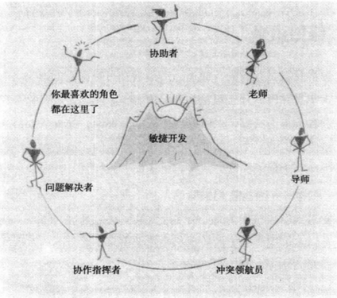

一、成为好教练
1.你不需要在已选好的敏捷开发架构中再加入新的事物、事件或者角色。你只需要深入发掘和恰当表达出现有框架中可能存在的有挑战性的、难以驾驭的、微妙的方面，并据此引入其他相关学科的知识
2.做好敏捷教练

3.在敏捷开发指导过程中，对团队影响最大的其实是教练本人的内在品质和其遵循的行为方式，而并非是任何外在的具体的技术或者意见
4.一个ScrumMaster，如果能够带领多个团队贯彻执行敏捷思想，并且不止步于此，能够激励团队，让他们不断地追求更好的团队表现，并享受这个过程，那么他实际上已经是一名敏捷教练了
5.当团队尝试将Scrum与其他开发理念相结合时，如果能保持Scrum框架，以及完全执行敏捷开发理念，就总能获得成功
6.成为敏捷教练的背景

7.一个敏捷开发（或Scrum）教练应该是：
- 一个能够准确掌握敏捷开发实践和理论中的深层次内容，并且能够帮助团队理解这些内容的人
- 一个面对过巨大挑战、内部阻力，并且能够在需要时为经理们或者其他团队的人员提供指导的人
- 一个能够帮助组织内各级管理层去深刻理解有效的敏捷开发能够为日常工作带来哪些好处的人
- 一个能够从专业辅导、冲突管理、矛盾调解、剧场表演等相关学科中引入新的观点和理论，从而让自己团队的表现不断提升的人
8.教练只是进行引导 ，成功则等于团队的持续提高和对卓越表现的不懈追求


9.在我们现在的客观环境中，总有一些公理是客观存在、无可避免的。这些公理是恒久的，永远都会起作用的，并且不可不认。客户的需求总会不断变化——这就是重力；这个世界在以不可思议的速度变化 ，而且总会有新的情况出现 ，且谁也无法提前预知——这也是重力；你没有办法替别人做出承诺，并期望他们完全按照你的想法行事——这仍然是重力
10.敏捷教练的诞生

11.内在品质
- 1）他们都具备神奇的“读懂一个房间”的能力
- 2）他们关心人本身胜过关心产品
- 3）他们会不断培养自己的好奇心
- 4）他们相信“人之初，性本善”
- 5）他们了解事先制定的计划总是无法执行，所以他们时刻与自己的团队一起解决新出现的问题，而不是固执地坚持某一个解决问题的方法
- 6）他们有着学习的渴望
- 7）他们相信，只要给予一个成长的环境和一个大胆的目标，任何一组人都能将事情做好
- 8）他们不能容忍人们为自己不求上进而找各种理由
- 9）他们相信预期外的状况是一定会出现的，而混乱和毁坏只是达到更好状况前所必经的阶段而已
- 10）他们愿意承担犯错的风险
二、追求高绩效
1.把高绩效作为自己的期望基准，并鼓励团队去实现它，这些都能给你以重要而强大的动力
2.作为敏捷教练，要想帮助团队开启通往高绩效的旅途，需要为团队设定将要实现的目标期望。“超越一切合理的期望”和“甚至对自己的进度感到惊讶”
3.你需要先让自己生产一种对这段征途期待、向往和兴奋的感觉，然后再把这种感觉传导到整个团队中去
4.为了帮助团队描绘出高绩效期望的愿景，你可以给他们提供一些闪着比喻小火花的影像，比如高绩效树
5.高绩效树：

- 1）从树根向上画，列出Scrum的价值准则和高绩效的特征
- 2）Scrum准则：
- 承诺：愿意对目标做出承诺
- 专注：做好本职工作
- 公开：所有事项都是公开、透明的
- 尊重：对团队中不同的人保持尊重
- 勇气：要有承诺 、付储行动、敞开心扉和期望得到别人尊重的勇气
- 3）极限编程准则：
- 沟通：只能通过很多实践才能保持正确的沟通，而这些实践又必须通过相互沟通才能完成
- 简单：比起今天做一件复杂但日后也许永远不会再用到的事情，还是做件简单，但明天只需要稍微改进下就可以重用的事情更有意义
- 反馈：对系统当前状态的真实的、具体的反馈绝对是非常宝贵的
- 勇气：有勇气去开发高质量的软件，尽管这可能意味着需要删除原有的代码、改变原有的设计方案甚至是延长开发周期
6.高协作性和高绩效的特征：
- 他们是自我组织起来的，而不是根据角色或头衔来组织的
- 他们有权做出自己的决定
- 他们坚信，作为一个团队他们可以解决任何问题
- 他们致力于追求整个团队的成功，而不是为了个人利益不惜一切代价
- 团队对他们自己的决定和承诺负责
- 是信任而不是恐惧或愤怒在激励他们
- 他们是多数人意见驱动的，并做到求同存异
- 他们会不断提出富有建设性的反对意见
6.当团队找出自身的缺点并制定了计划准备做得更好时，作为教练的你，需要鼓励他们进行反思，但不能因此怀疑自己
7.“过于严肃是平庸和官僚思维的警示信号。认真致力于融会贯通和高绩效的人一定是充满活力的”
8.另一个比喻，打好基础
- 经验论：从一系列短时间内发生的失败中汲取教训并最终获得成功。靠事后总结学习而非事前预测和推断去获得更多的经验
- 自我组织：最了解问题本质的人最清楚该如何解决问题
- 协作：培养一种“是的，然后呢？”的思维方式。重新思考各种观点；不要轻易妥协和盲从
- 优先级：专注！做优先级最高的那件事
- 节奏：深呼吸，然后顺其自然
三、自我掌控
1.敏捷开发指导是在讨论作为教练的你能给整个团队带来什么，以帮助他们发觉自己身上的潜能，能带给团队的最有用的事情就是你自己，一定要将自己融入团队中去
2.当你很紧张、浑身不自在的时候，应该就是找到自己短板的时候了，探索如下领域：
- 自己应对冲突的方法
- 在日常交谈中所使用的语言
- 把自己定位为一个服务型教练
- 个人情绪管理能力
3.托马斯·基尔曼冲突模式测试工具：强硬性，个体试图满足自己的关注度；合作性，个体试图满足他人的关注度
- 竞争型：强硬且不配合
- 合作型：强硬但配合
- 妥协型：一般强硬和一般配合
- 顺应型：配合且不强硬
- 回避型：既不强硬也不配合
4.作为团队领导者，你的任何意见都是有意义和有价值的，而不是微不足道的。也许你在不经意间说的某句话会对想从你这里寻求指导建议和同意支持的团队成员产生毁灭性的影响
5.“当我们关注于自己的所见、所感、所需，而不是忙着去下定论、做判断时，我们会发觉自己是如此富有同情心和爱心”
6.教练应该为所指导的团队服务，而不是团队服务于自己的教练。“领悟不是为了自我安慰，恰恰相反，它是对自我的积极干预和及时唤醒”
7.“一定要确保优先满足团队成员的最高优先级的需求。最好的但不容易做到的检验方法是：你所提供的帮助和服务能够帮助团队成长和发展吗？团队成员是否变得更积极、更智慧、更自由、更自主？团队成员更像服务于你还是你更像为团队服务？”
8.“真正的服务型教练会很自然地在回答任何问题前先听别人把话说完。”
9.“（人们）在被别人尤其是被自己的领导所认可和器重时，往往会在将来取得更大的进步，即使他们当下所做的比起能做的还远远不够”
10.只有团队中的一个个个体变得强大了，整个团队才会强大起来，都会被激发出更多、更好、更有创意的想法。乐于培养团队成员、懂得聆听、允许团队发表看法、认可和尊重每个成员
11.“激励与应对之间存在着本质的区别，而这正是个性使然”
12.摒弃“命令加控制式”的指导方式：
- 1）不要纠结于结果
- 2）把问题留给你的团队
- 3）充当一面镜子：将自己观察到的事情 ，以不夹杂个人意见的方式讲述给自己的团队
- 4）留意自己的用词和表情
- 5）习惯沉默：让团队的其他人有说话的机会
- 6）学着不讲情面
- 7）允许团队失败：一起从挫折中走出来的团队会比那些一直被保护着的团队更坚强和更高效
- 8）做团队最大的粉丝但要谨慎：告诉团队——以及你所遇到的每一个人——表现得如此空空如也是因为他们是一个团队
13.“在一些特定的、团队比较熟悉的事件环境下，要放松（对团队的）控制和管理，相信团队的工作进度”
14.提前做好准备：
- 1）日常实践：
- 听一些可以舒缓心情的音乐
- 读一些能带来灵感和启发的书、博客、名言警句
- 慢跑，然后静静聆听大自然的声音
- 写下三件你很感恩的事情
- 做做瑜伽或者伸伸懒腰深呼吸
- 认可自己，享受当下生活的分分秒秒
- 将你的电脑密码和你当下的工作关联起来
- 聆听别人、自我剖析、原谅自己和用心观察
- 2）只关注你所关心的：保证关注一件你所关心的事情 ，只能选择其中一个作为重点
15.做好当下的事情
- 1）团队会认为你的反应是你性格的真实体现而不是你作为教练的职务行为，要清醒地选择是否对特定的事情做出反应
- 2）请注意自己对他人的看法，区分清楚自己是把他们作为物体还是活生生的人来看待
- 3）听的技巧：
- 内心收听：认真听但自己会重新解读：这会如何影响到我自己？
- 专心收听：完全专注在说话人的话语本身，做出客观无我的回应
- 全心收听：结合当时环境中的每个因素来真正收听每句话
- 4）说话
- 如果只是为了显示自己是一个聪明人或者希望在团队面前表现自己的价值，就真的不用说了
- 不要马上开口，先数到10（或者100）
- 当周遭到沉默的时候，才会有更大可能诞生惊世骇俗的想法
- 5）当我真的“融入当下”的时候，就会发现团队当下真正的关注点在哪里。以此为据，我会帮助他们用一种更加富于建设性和正面态度的方式不断成长
- 当你“融入当下”时，你的立场会坚定而鲜明，就能把坚定和确信的态度带给那些你所辅导的人，你的话语会清晰无误，你的每句话都能掷地有声
- “融入当下”也是团队成员们需要发展的一种技能
- “信任。是一种充满信心和坚定的感觉。它确信通过包含特定秩序和结构的方式可以解决各种问题。我们可能并不清楚当下在我们或者其他人身边正在发生着什么，或者在其他特定场合下正在发生什么；但如果我们能够信任自己或者其他人，或者信任某种流程或理念，那么我们总能在这种信任中找到某些有影响力的稳定因素，这些稳定因素可以提供安全感、平衡和开放。如果这种信任本身不是基于无知的话，那它总能在直觉层面上引导我们，避免我们给自身带来危害和自我毁灭”
- 6）为了做到调整立场，首先请重新考虑你的介入是否真的对团队有益，如果不是，你一定要明确地“撤回”自己刚刚提出的观点。如果你想让他们认认真真听你说话，那么你必须珍惜他们的时间并尊重他们做事的方法，而不是关注自己是否尴尬
四、改变自己的风格
1.敏捷团队的发展阶段
- 1）守、破、离：守即服从规则，破即打破规则，离即创造规则
- 2）守，无条件服从规则
- 3）破，掌握了基本功，然后再花时间“琢磨所有事情的本质和真相”
- 4）离，“无招胜有招”
- 5）为了超越前者，我们必须 首先完完全全地掌握所有规则，然后才能安全地去打破规则，最后创造出新规则

2.敏捷教练的风格

- 1）教学型
- 给自己的团队制定各种规则和纪律，必须保持自己坚定的立场和态度
- 鼓励自己的团队暂时放下想要了解每件事情原委的迫切愿望，让他们服从你指定的规则，并把确保每一次敏捷开发实践的圆满完成作为自己的首要任务
- 2）指导型
- 先采用“教学型”风格来打下相应的基础
- 经过反思和进步，团队成员会对同样一项任务持有更加开放的态度，能够在坚持同样的价值观和原则的前提下，设计出多种解决方法
- 3）顾问型
- 当团队能够将敏捷开发的实践、价值观和原则融会贯通，并且处于健康发展的阶段时，就可以采用顾问型风格了
- 4）在从“教学型”到“指导型”，再到“顾问型”风格转换的整个过程中，一定要确保自己兼顾到了以身作则和深入了解这两方面
- 5）“当你需要我而不是想我的时候，我必须留下；你想我而不再需要我的时候，我必须离开”
3.大胆改变自己的风格
- 1）随着团队能够很好地按照敏捷思想的要求进行基本的实践，并且在他们讨论自己要如何改进的时候，还能够坚持该思想所包含的所有重要原则，你实际上可以判定他们已经做好了进入“破”状态的准备
- 2）他们是否能够用自己的方法来对敏捷开发的艺术做出新的、让人激动的诠释？如果能做到，那么他们实际上已经准备好进入“离”的状态了
- 3）在这个过程中，你也在经历自己作为敏捷教练的“守”-“破”-“离”状态的转变。或许你作为一个敏捷开发人员，处在“离”的状态；但作为敏捷教练却处于“守”的状态
五、教练是导师
1.什么是教练指导
- 1）在指导敏捷团队时，需要同时结合指导和辅导两方面的优势
2.指导的目的是什么
- 帮助团队获得那种会从本质上影响到整个行业和团队成员的、惊人的成果
- 帮助团队进步，使大家一起变得更加健壮（或者当团队发展不顺利时，需要帮助团队恢复到健康发展的状态中）
- 帮助每一个团队成员在他们的敏捷旅途中迈出下一步，这样他们才能成为更加成功的敏捷人员，在自己成长的同时回馈团队，帮助团队一起进步
3.两种指导级别
- 1）当你指导一个敏捷团队时，其实是你同时在两个级别上一起指导他们：单个团队成员级别和整个团队级别。指导往往是基于你所选择的敏捷框架，而不是取代任何敏捷框架
- 2）在项目的开始和收尾阶段，指导的介入能产生最强大的效果。对于敏捷团队，在一个Sprint或产品发布的开始和收尾阶段，指导的介入能产生最强大的效果
- 3）在Sprint中间阶段，你应该谨慎思考和决定是否要向团队公布你那些重要的观察结果或者他们需要提高的地方

- 4）Sprint开始阶段的指导
- 在上一个Sprint结束、新的Sprint刚开始的时间段，正是指导整个团队的大好时机，教学型指导应该占主导地位
- 铭记你的目标：帮助整个团队了解敏捷是如何完美工作的
- “给团队的组织框架（敏捷架构）带来生命，然后帮助团队开始独立工作”
- 5）中间阶段的指导
- 减少整个团队级别的指导，更加温和
- 只有当教练有意识地要发表对大家有非常大意义的见地时，才进行整个团队级别的指导
- 对绩效策略沟通的指导适合在Sprint中期介入，也是绝佳的时机来进行一对一指导
- 鼓励提出问题的成员和另一个成员一对一的解决问题，如果严重到威胁整个团队，可以提议在做项目回顾时再提出来讨论
- 认可和强化自发的优良团队行为的好时机，可采用在团队工作间中“大声说出来”的指导方式
- 6）收尾阶段的指导
- 创造条件鼓励团队积极讨论，并就下个Sprint中要做哪些改进的问题能达成一致
- 指导团队成长到“团队成员懂得相互学习是多么美好的那种境界”
- 7）产品发布层面的指导：有类似的发布开始阶段、发布收尾阶段及时发布中间阶段
- 8）指导的基调
- 有爱心、同情心和永不妥协
- 教练应该始终向队员们强调每个人都具备不断提高自身敏捷能力的可能性和需求，并且通过提升每个人的技能水平来达到整个团队能力提升的目的
- 指导正是要帮助每个人提高这种专业能力，并且让他们能够将工作中获得的技能推广、应用到整个生活中
4.一对一指导
- 1）进行一对一指导的四个前提
- 在超前半步的层次上进行指导：我们先确定自己所指导对象目前所处的层次，然后站在超前半步的层次上对他们进行指导；倾听他们的内心，了解他们对自己职业生涯发展和规划的各种想法；随时调整看他们是否要前进一步了；
- 置身于充满安全感的环境：在团队内部发生的事情就让它留在团队里；需要一定的空间来容许他们犯错，并且作为一个团队来共同改正错误；
- 与管理者们合作：你所有行动的动机和目的都应该来自帮助每个队员完全发挥出其在敏捷上的潜力；对经理们也进行指导；
- 创造一种积极的氛围：你不必喜欢每一个接受你指导的人，但你必须帮助他们；
- 2）如何进行一对一指导
- 开始谈话：真正的谈话都包含着激烈的交锋；我们都抛弃了自我，而真心投入谈话中去，并且让谈话真实，更富有成果；观察式谈话与邀请式谈话
- 注意掌控谈话的进度：“在被指导对象开始念叨的时候，要记住这一点：与说对应的不是听，而是等”；

- 3）领域专家与敏捷指导：提供一些思路，帮助他们找到属于自己的解决方案
- 4）远程指导：为了避免“他说”可能造成的误解，你需要把所有的心思都只放在被指导对象身上，只有去了解他在接下来的敏捷过程中需要些什么
- 5）了解你的界限：完全了解你面前的人们；通过一个简单有效的框架组织，一小组人可以取得巨大的成就
4.指导产品负责人
- 1）指导产品负责人做好自己的本职工作
- 2）商业价值的微定义：在整个开发产品的过程中，微定义传达了我们必须要达到的下一个关键业务目标
- 3）建立以商业价值为导向的思想体系
- 4）指导产品负责人成为为团队着想的优秀产品负责人
- 5）指导产品负责人们“善其事”
- 从以时间进度为导向转为以商业价值为导向的思维方式
- 在所有的互动中保持商业价值驱动型的思维方式
- 与发起人的想法保持一致
- 提出更多（或者更少）的要求而非进行细节管理
- 督促团队兑现他们的承诺
- 利用关键时刻
5.指导敏捷教练：探索、学习、指导
6.指导敏捷经理：
- 团队管理：将团队的自组织能力与经理们的有效领导相结合
- 投资管理：应该减少对时间进度和“下一个重大截止日期”的关注，而更多地关注和探究在当下最有价值的投资应该是什么
- 环境管理：帮助整个组织以“高效”的方式思考
六、教练是协助者
1.敏捷教练通过给团队创建一个“容器”来进行协助，这个“容器”中盛装的是团队成员新奇的想法和创新，通常表现为一组例行的问题或者一些其他轻量级的和灵活的框架。教练创建容器，团队填充内容
2.保持轻微的接触：教练要时刻提醒自己“这是他们的会议，不是我的”
3.协助站立例会
- 1）站立例会的效果：
- 共济压力：团队承诺一起完成Sprint的工作
- 细粒度的协作：快速而有重点
- 聚集少数任务：关注事情的完成，也就是任务不能在整个Sprint期间一直处于进行中
- 每日承诺：每位团队成员每天都需要对团队做出承诺
- 提出障碍：思考“有什么事情阻碍了我或者让我的工作放缓”
- 2）在站立例会期间协助
- 教授站立会议规则之后退出 ，团队不需要你跟他们站在一起，也不需要你作为主持人引导团队成员发言
- 如果你不想教授或者不想重申站立例会如何进行，那么，在站立例会期间就不要去干预
- 把更多注意力放到对团队成员的观察上，不需要带有任何的评判，只需要带着好奇感来引发他们的反思
- 如果团队没有接受来自你的观察，并做出改变，别强迫团队去做改变
- 3）修补站立例会
- 与建设一个“完美”站立例会相比，如果团队从目前低效的站立例会中能学到更多有益的东西，那么你就可以让他们保持现有的做法，即使认为它看起来很可怕
- 强调站立例会的目的：我们要获得的成果是：产生共济压力、利用细粒度协调、聚集少数任务、做出每日承诺及提出阻碍
- 要求眼神支持：要求其他每一位团队成员都直视发言的成员，并进行眼神交流
- 4）成就和挫折都是团队的，而非你的，只有当团队学会如何彼此依赖的时候，敏捷才会发挥效用
- 5）把团队的注意力引到因果关系上，放大团队感觉到付出代价的瞬间，帮助他们了解因果之间的关联
4.协助Sprint规划会议
- 1）确保框架支持Sprint规划的目标
- 了解工作：团队成员理解、选择、分解和志愿认领任务
- 获得一个全新的开始：不管上一个Sprint如何结束，当前的Sprint都是全新的
- 对共有目标做出承诺：所有团队成员都要理解当前Sprint中的所有工作，并且一致同意要达到的Sprint目标
- 创建重点和充裕感：根据团队之前的成绩，通过为当前的Sprint选择适当数量的工作，团队为自己创建了重点工作
- 2）为Sprint规划做准备
- 教练两个任务：把一个结构（会议“容器”）整合到一起和确保产品主管已经准备好待处理事项
- DEEP：“一个好的产品待处理事项有四个特点：适当地详细、被评估、紧急性、已设定优先级”
- 3）在Sprint规划期间进行协助
- 介绍计划会议的结构，确保所有的团队成员理解并造成使用该结构
- 为了掌握时间框，需要先询问团队成员，以确定为了完成Sprint规划所需要的时间
- 让团队成员用他们自己的想法来填充时间框，倾听团队的对话，注意他们的进展，捕捉可以教授的瞬间
- 专注于交付的商业价值
- 提升强烈的产品所有权：强化产品负责人作为团队愿景管理人的的角色，这个角色可以帮助产品负责人待在产品层次
- 维护健康的角色边界：维护产品负责人和团队，以及敏捷教练和产品负责人之间的健康边界，允许团队帮助你坚守自己的角色
- 改进任务组织：团队在组织任务时，经常会卡壳，教练需要确保团队不会以牺牲理解为代价
5.协助Sprint评审
- 1）把所有任务整合到一起并不意味着做一个大的演示或者提升个人的公众演讲技巧。它意味着花费最小的努力向干系人展示团队真正创建的产品
- 2）为使展示更完美所花的时间等于损失掉的创造产品的时间：更多的时间应该花在真正的工作上，更少的时间花在让事情 “看” 起来更好上
- 3）评审目标
- 真实展现
- 展示和说明
- 获取直接反馈
- 提供内部情况
- 寻求帮助
- 4）教练并不重要（或者至少从旁观者来看并不重要），但要把注意力放在团队内发生的和针对团队发生的事情上
- 5）在Sprint评审之后，跟团队分享笔记
- 6）观察类型
- 加强的观察，为了坚持敏捷
- 深化地观察，可以给他们提示团队的内部工作方法
6.协助回顾
- 1）敏捷教练在回顾会议中担任明星（协助员）的角色，特别是对一个新的团队。因为教练是团队质量和绩效的监护人，教练在整个Sprint过程中要对质量和效绩保持关注，回顾的目的：
- 检查并调整
- 回头看“怎么样”而不是看“什么”
- 下次做得更好
- 2）为回顾做准备
- 在团队Sprint期间，教练要集中注意力，关注工作是如何开展的
- 设计回顾议程需要解决在Sprint期间出现的最“物有所值”的问题。或者让它作为学习性的议程，在其中你可以介绍一个新的框架或者新的思考方式，然后问道“我们如何用它？”
- 你也可以针对已出现的主题设计一个学习性议程。这样就可以关注主题而不用责备或者打击某人
- 3）在回顾期间协助
- 展示议程，告诉团队都设计了什么活动，并且询问团队对议程是否认可
- 不论话题是否结束，教练都要保持时间框。如果团队成员想继续，需要他们所有人同意，而且这个后续讨论可以在一个短的时间框内完成。这就不会让人觉得自己被关在一个看起来没有终结的会议中。这个附加时间一到，任何人都可以直接要求会议结束
- 4）在回顾后进行协助：如果有人受益于回顾达成的协议而改变了他们的行为，那么你可以把这个例子分享给团队，并且在公开场合对该成员给予表杨
7.在团队对话时进行协助
- 1）关注对话的质量，而非对话的内容
- 2）帮助团队改进他们的对话，这样他们就可以有一些高质量的想法，而这些想法可以被直接应用到他们构建的产品中
- 3）争论的同时会自我管理对话的艺术，确保每一位都可以发言，并认真地听其他人发言
- 4）强有力的观察：在自己的头脑中保留一个不断变化的问题清单
- 是不是每个想发言的人都得到了发言的机会?在对话的过程中，占主导的人当中有谁需要更多地倾听?有些比较低调的声音是否还需要让其他人听到?
- 这些想法是高质量的吗?
- 团队是不是尽可能地采用最简单的方法?
- 团队是不是疲劳了?
- 团队是不是很紧张?他们需要调剂吗?
- 团队是否足够大胆而不墨守成规?他们有没有想出一些绝妙的想法或者冲破束缚?
- 他们是不是尽可能多地完成工作，还是他们允许一些“可接受的”障碍阻止他们的工作?团队在做任何事时是否都以客户价值为中心? 他们被卡住了吗?他们是否需要一个新的视角，一个可以带给他们更多可能性的视角?
- 5）强有力的问题：开放式的问题，没有正确答案，可以引发自我反省，可能描述了额外的解决方案或者会引出更大的创造力和洞察力
- 6）强有力的挑战：有时需要一个“不合理的”挑战来帮助他们从一成不变的处理方式上寻求改变
- 7）大多数时间你可能会远离主要活动，当团队变得紧张或者你注意到团队存在焦虑时，可以走到前面重新与团队坐到一起
- 8）敏捷教练与团队做的每一件事都应该以向团队转移技能为目的，两个核心技能是，在一起工作过程中的协作和冲突处理
七、教练是老师
1.在团队启动时教授
- 1）在启动期间要解决如下主要问题：
- 学习将要使用的流程
- 了解团队
- 了解将要做的工作
- 前进！
- 2）学习流程
- 所选择的敏捷框架
- 教练要向他们教授完整的、充分的和令他们信服的敏捷
- 教练应该坚决地站在这样的立场上：即教练非常懂得敏捷的核心，教练能帮助团队像一个初学者一样看待当前全新的开始，这样团队才有充分的可能性正确地使用敏捷
- 3）了解团队
- 从了解团队中的每个人开始，然后创建一个共有的团队特征，类似导游的方式来帮助团队发现关于他们自己和他人的新鲜事情
- 作为个体相互了解：彼此分享自己的希望、梦想、技能、观点和目标（“历程”、“技能市场”、“星座”、“价值观”）
- “没有什么事情比被注视、受到赞美，或因为你是谁而被人了解更能赋予你力量”
- 创建共享的愿景：从个人开始（这个项目结束，我获得了…）；让冲突暴露出来并且识别他们的存在但别解决它们
- “我从不教我的学生；我只是试图为他们提供可以学习的条件”-爱因斯坦

- 创建团队规范：共有价值、胆大不是一件坏事、分享工作=分享荣誉、注意到有人需要帮助进而提供帮助、即使觉得不自在也要保持开放的沟通、团队的成功远比个人的成功重要、保持简单、在寻求帮助前别挣扎超过30分钟、要真正的开放、在一起生活的规则、后勤、在冲突中保持在一起、我们将通过什么方法提出当前的冲突？、当我们深陷冲突时，我们如何回到我们共享愿景的“梦想”？、在什么情况下我们愿意以团队的方式放弃努力？
- 4）了解将要做的工作
- 展望：邀请你能找到的最高级别的人来为团队描绘他们将要创建的产品的愿景。在两个层面来谈项目的重要性：公司层面和个人层面（报纸具化）
- 评审产品待处理事项：产品负责人遍历产品先讲处理事项，回答关于待处理事项的相关问题，并要求团队找出遗漏的工作项
- 出发：“产品负责人，如果用一条报纸标题来概括的话，什么短语可以描述第一个Sprint的目标？”
- 5）准备启动
- 足够好：为一个团队的启动创建你自己的“方案”。不必担心启动议程不够完美
- 有洞察力：一个有洞察力的启动寻求满足主要合作者的目标
- 有针对性：设计一个有针对性的启动
- 6）团队重新启动：当团队成员或者团队目标有很大的改变的时候，重新启动团队
2.指导团队的新成员
- 1）尽可能地保持团队成员的稳定，并且指导团队只有在Sprint交接的时候调入或者调出团队成员。记住：做出承诺的人才会完成该承诺
- 2）当一位团队成员离开的时候，确保团队对于这个人和他们的贡献给予答谢
- 3）当一位成员加入团队时，向该团队成员介绍团队
- 4）几天后深入了解这个人
3.利用可教导的瞬间：避免长篇阔论，不要重新培训或者介绍一个全新的领域
4.始终教授敏捷中的角色
- 1）教授产品负责人角色
- a）角色
- 商业价值推动者。所有决定和权衡，包括什么时候停止该项目，都要考虑是哪种方案现在就可以给公司带来最大的商业价值
- 日常决策者。经常与团队在一起，参与他们的对话并且在需要时做出决策，这样团队才可以顺畅地向前推进。 愿景管理者。站在团队的角度来管理产品的蓝图，并且指引团队在每一个Sprint 都向这一蓝图前进
- 团队保护者。保护团队使他们避免外界的噪音和压力，让他们保持注意力
- 最终责任人。完全投身于产品。团队的工作并不仅仅是产品负责人的另一份工作任务一一它对你的职业生涯很重要一一所以你应该慷慨地接受这个担子，成为产品业务成果的最终责任人

- b）行为：衡量能够成为产品负责人的CRACK原则：遵守承诺、负责的、被授权的、有协作精神的、知识渊博的
- 对工作做出承诺，并且充分地参与，跟其他任何团队成员一样
- 对结果负责，这样才能真正地投入工作
- 得到项目发起人的授权，这样产品负责人才可以对正在开发的产品做决定，并且知道哪些决定可以单独做，而哪些决定需要咨询其他人
- 协作是与人交往的一个正常模式
- 对所做的事情和所从事的领域有渊博的知识
- 2）教授敏捷经理角色
- a）角色
- 组织变革家:引导组织对于敏捷的采用(和重新采用)
- 边界管理者:强化健康的角色边界，包括团队内部和团队与更大的组织之间的边界
- 价值最大化的倡导者:像产品负责人管理用户故事组合一样管理项目组合，不断地询问现在哪个是具有最高商业价值的项目
- 精益管理者:使用精益思考来改善组织流程，这样团队交付的价值就可以毫无延迟地实现
- 组织障碍消除者:寻找坚韧不拔的勇气来消除根深蒂固的障碍
- 团队拥护者:从团队的边缘来观察团队，通过真正信任团队的能力来释放团队，使他们充分地发挥潜能
- b）行为
- 只通过产品负责人把工作项添加到产品待处理事项中
- 把问题或者观察引向敏捷教练或者产品负责人
- 在每天的站立例会上保持安静
- 参加Sprint评审并且给出直接反馈
- 只有在被请求时，才帮助移除障碍，否则，让团队自己完成工作
- 通过简单的方式与敏捷团队一起工作来满足需求，而不要在这些需求之上加人分散注意的官僚主义成分
- 3）教授敏捷教练角色
- a）角色：
- 清道夫、偏差羊、服务型领导者、质量与成果的监护者
- b）行为

- 4）角色的紧密关联

八、教练是问题解决者
当问题被带到你面前明，你就很容易想到去找解决方案，并搞定它，这时，一定要抵制诱惑。对人的基本尊严的侵犯需要你的及时行动，而对于所有其他情况，并不需要立即处理。要应用教学的指导方式，教授他们你觉得他们缺少的东西。
BART分析（边界、权力、角色、任务）
解决问题：
- 直接解决它
- 重申敏捷的含义
- 提示体系本身
- 教练的工作不是去修理或者“修复”体系，而是把体系的本质提示给相关的成员。有了对体系新的认知，体系中的成员其“响应”能力就会增强，从而更好地执行系统的任务。
- 善用回顾
- 增加一种启示方法
九、教练是冲突领航员
一个高协作（高绩效）团队的特征之一便是，他们能够有建设性地利用冲突。他们生活在一个存在建设性分歧的世界之中。
冲突级别：
- 第一级：解决问题
- 信息分享和协作
- 语言是开放并基于事实的
- 排除：协作、共识
- 第二级：争执
- 个人保护胜过协作
- 语言是戒备的但允许解释
- 排除：支持、安全
- 第三级：争辩
- 胜利重于解决
- 语言包含个人攻击
- 排除：迁就、交涉、得到事实
- 第四级：圣战
- 保护自己的族群成了焦点
- 语言是意识形态的
- 排除：安全框架、“穿梭”外交
- 第五级：世界大战
- 很少或没有语言交流
- 摧毁对方
- 排除：做任何必要的事情来防止大家彼此伤害
所有的敏捷团队常常可以自己排队冲突，即使是新的团队和不团结的团队，即使是冲突层次已经到了第三级。教练应该多花一些时间坐在后面，观察他们的行动，看看他们是否在处理冲突上有所进步。
人们有时只是需要发泄。作为教练，你需要保持理智和冷静，聆听他们的报怨，让他们发泄抱怨，然后让抱怨渐渐消失，这样做就打开了治愈的厦门。在他们发泄时，专注地聆听就是你所有需要做的事情。
“出路”就是通过增加群体的积极性来引导冲突，而非关注于解开并解决冲突。简而言之，增加积极性就是增加团队成员之间的良性互动。
十、教练是协作指挥者
协作是整体大于其中个体之和。合作则是各个部分之和。如果团队承担的工作不需要创造性，并且团队成员满足于机械地应用敏捷实践，那就可以选择：只进行合作不需要协作。
合作的特性在于：正在进行中的工作可以在团队成员之间和更大的组织之间平滑地流动。
协作需要以合作为基础，但它增加了产生创造性、突破性和意想不到的结果的重要元素：突创。
突创：当一个系统的某种属性不能对应到系统的任何单个部分时，这就称为突创属性。人的个性是人大及的突创属性，它不能对应到哪些单个的神经元。
一些关键的行为和态度来与他们良好合作：
- 同意“响应能力”的观点，这意味着选择有意识地应对生活中发生的任何事情，而不是一味否认或指责
- 注意到由于团队中真正的“团队合作者”从来不明确“赞同”，因此你的沉默会被认为是暗示同意
- 会运用你的否决权，同时也愿意帮助团队，寻找其他可接受的方案
- 通过反思自己的行为来认识自己有意识意图和无意识意图间可能会相互干扰
- 带着同情心说出真想，而不是发表“建设性的”批评

从团队层面的合作过渡到如下协作行为：
- 说出不能说的话
- 建立而不是打压想法
- 听所有的声音
- 培养协作中的亲密关系
- 塑造对突创的信念
- 消除黏滞
- 一起认真地做游戏
合作形成的情况：
- 他们的交谈有丰富的、高带宽的思想交换特征，通过这种交换，大多数时候，他们形成了彼此的共识，而不是通过人和电子邮件在团队中传送信息，导致日后产生多层误解
- 团队成员谈论困难的问题，并深入工作的实质，在这个过程中，没有形成任何防护墙
- 当他们一起工作创造产品时，过程中产品会平滑地由一个成员移到另一个成员
十一、敏捷教练的失败、恢复和成功模式
敏捷教练失败模式：
- “侦探”：花不多不少的时间观察团队，然后便带着下次回顾会议的话题，消失在黑暗之中
- “海鸥”：猛然扎进站会中，用善意的观察和建议冲击整个团队，然后便飞走
- “武断者”：经常表达各种观点，固执已见，不惜放弃指导团队进行有意义的讨论所需要的客观性
- “行政人员”：通过充当不必要的会议后勤、访问权限申请和其他行政事务的中间人来削弱团队的自主权
- “轴心”：充当团队成员间所有交流的中心，并进行任务层面的协调
- “蝴蝶”：在一个个团队周围掠过，停留的时间仅够传授一滴慧珠或提出一个富于哲理的问题
- “专家”：如此深入地进到团队工作细节中，以致因为树太多而不见森林
- “唠叨者”：好心地“提醒”团队开始站立例会、更新状态墙、按时完成承诺的任务等
避免失败模式，或至少从失败中恢复的方法很简单，也很困难：用信任替代担心：
- 培养觉知
- 保持好奇
- 拓展视角
- 结对合作
- 练习成功
敏捷教练的成功模式：
- “魔术师”：问这样的问题——瞧！看看什么东西在那里，但刚才却看不见
- “儿童型”：诚恳又惊讶地问“为什么”，并对生活和其中的一切有永不满足的好奇心所驱使
- “长耳朵”：听所有的东西，但并不响应所有听到的，以给别人发展的空间
- “好质问者”：以轻松、有趣和稍微失衡的方式，把别人从自满中摇醒
- “大智若愚者”：提出粗浅的问题来启发大家
- “蔓延的葡萄藤”：通过团队基本感觉不到的小步移动，无情地将团队一点一点拉回敏捷的核心
- “梦想家”：勇敢说出未来可能创造的东西
- “扩音器”：确保所有的声音都被听到，特别是被压抑者的声音
十二、成为合格教练的时机
敏捷教练的基本技能：
- 缓慢地给团队灌输敏捷实践
- 启动敏捷团队
- 一对一地指导团队成员
- 指导整个团队
- 指导产品负责人：与团队交互；实践商业价值驱动的思维方法；创建、整理和使用产品待处理事项；排队障碍；管理涉众；
- 指导外部涉众
- 在变革中指导团队
- 激发高效率工作的方法
- 接受团队成员比你更好的想法
- 自我掌控
- 成为敏捷价值观和原则的楷模
- 驾驭冲突
- 将自己置于不断学习和成长的道路上
- 开始回馈
十三、教练之旅